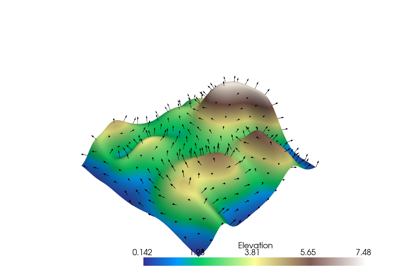

PyVista Gallery#
PyVista Examples#
Examples from the Sphinx-Gallery using PyVista for embedding 3D plots. Learn more about PyVista and see their extensive examples gallery built with Sphinx-Gallery!
Take a look at the Image scrapers section to learn more about how to enable and use PyVista in your example gallery.


Plotting Glyphs (Vectors or PolyData)
Plotting Glyphs (Vectors or PolyData)
Lighting Properties
Ray Tracing